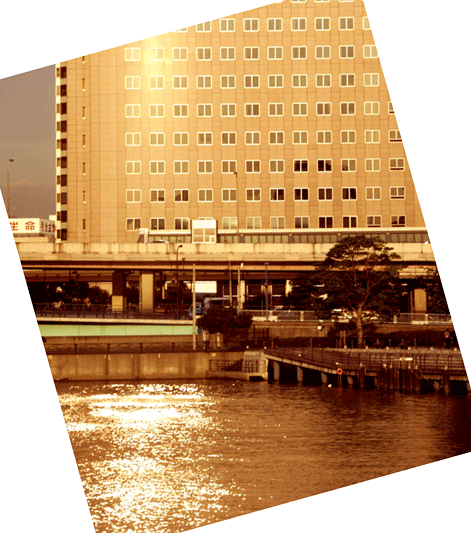
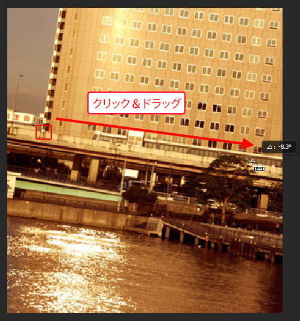

画像が傾いていた場合は選択範囲を作り回転させて補正することもできますが、
カンバスを指定して回転させることもできます。
そのときに何度回転すれば補正されるのかを測るのに［ものさしツール］が役に立ちます。
たとえば、三脚を使わずに手持ちでカメラ撮影した場合、
意図せず画像が傾く場合があります。
そういった場合に、[ものさしツール]を使ってカンバスの傾きを調整することができます。
素材フォルダ「PS04」から練習ファイル4_3_4.psdを開きましょう。
[ツールパネル]から[スポイトツール]を長押しし、[ものさしツール]を選択しましょう。
ツールを選択したら、建物の水平であろうところを、
なぞるようにドラッグします。
[ものさしツール]でドラッグすることにより、この傾きが記憶されました。
では、記憶された傾きを使って、カンバスの傾きを修正します。
メニューバーの[イメージ]-[画像の回転]-[角度入力]を選択します。
[角度入力パネル]が表示され、そのパネル内には
先ほど、[ものさしツール」で測った角度が自動的に入力されています。
そのまま「OK」をクリックすれば、角度が補正された画像になります。
（カンバスを回転させると回転させた後の余白部に、「背景色」が自動的に補完されます）

カンバスが傾くことにより、不要な箇所が生まれます。
[ツールパネル]の[切り抜きツール]を選択して必要な部分だけを切り抜きましょう。
画像上の必要な箇所をクリック＆ドラッグして切り抜くエリアを指定します。
指定できましたら、エリア内をダブルクリックして、切り抜きを確定します。
CS6以降から[切り抜きツール]に新しい機能が追加されました。
これにより、[ものさしツール]を使用した画像の傾き補正と切り抜きが同時に行えるようになります。
まずは素材ファイルを最初に開いた状態に戻します。
メニューバーの[ファイル]-[復帰]を選択してください。
ファイルが元の状態に戻りましたら、[切り抜きツール]を選択し、
[コントロールパネル]の[角度補正]アイコンをクリックします。
アイコンをクリックしたら、先ほどの[ものさしツール]での操作と同じように
画像の橋の部分をなぞるようにドラッグします。
s
ドラッグが完了すると自動的に画像の角度が補正され、
さらにカンバス自体も不要箇所が削除されるように自動調整されます。
[コントロールパネル]右上の○ボタンをクリックして操作を確定しましょう。
このように、これまでのバージョンでは複数のツールを使い分ける必要があったものが、
[切り抜きツール]単体で画像の傾き補正が出来るようになりました。
以上でこの節の学習は終了です。
ファイルは閉じて次の節へ進んでください。